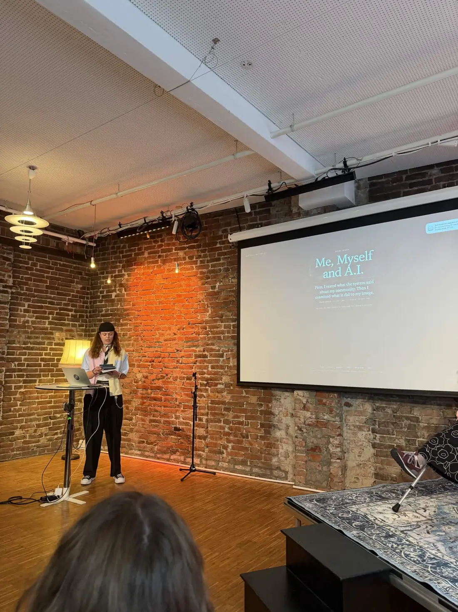
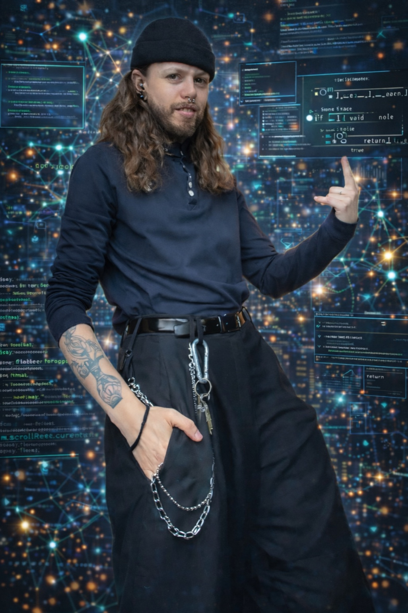
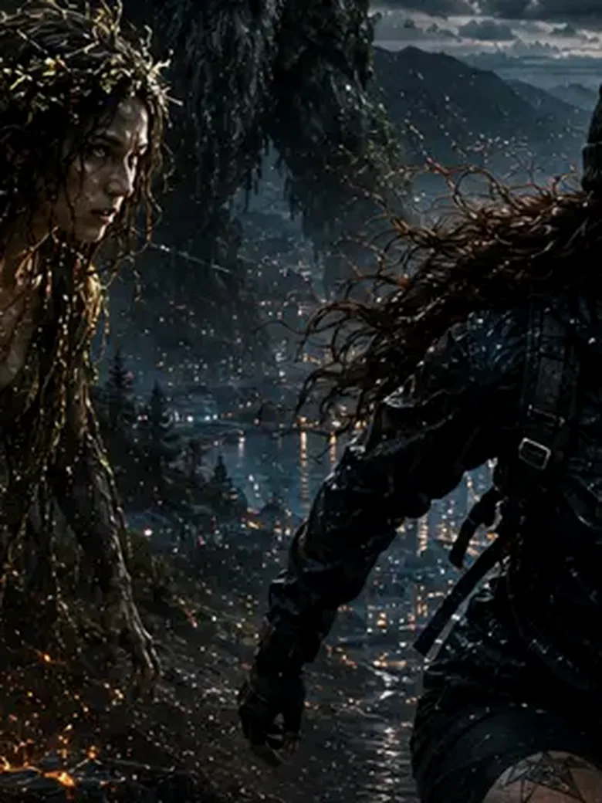
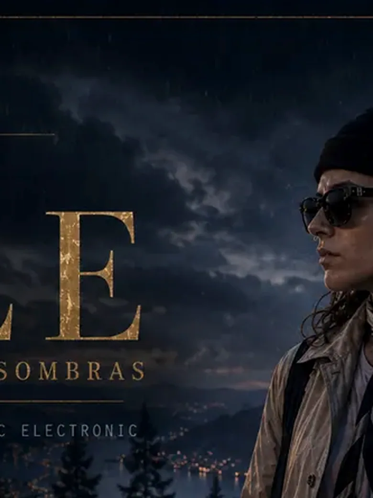
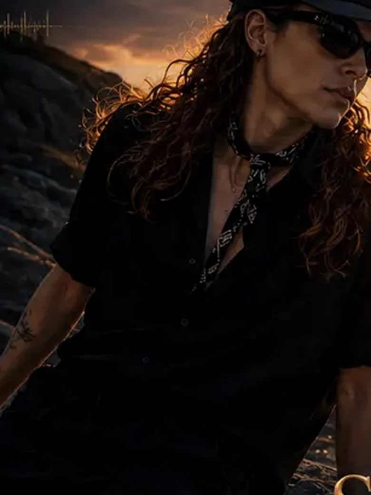
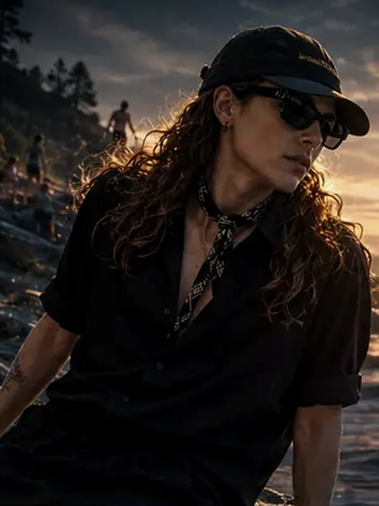
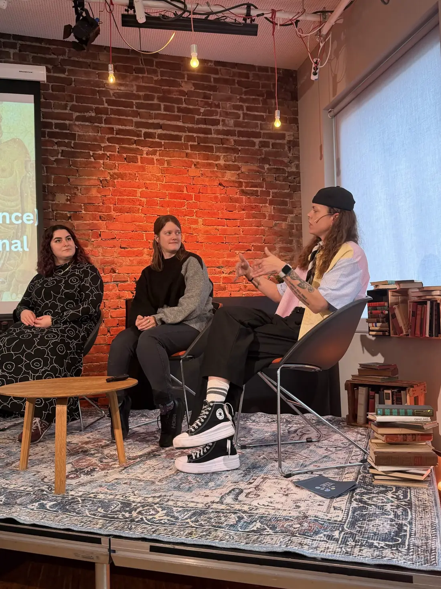

The room has been sorted.
Two rooms, one question. What happens when a system gets to describe you, but you do not get to change its terms?
First, thank you to the Center for Digital Narrative for having me. Equinox gave me two rooms this time: my own talk, Me, Myself and A.I., and The Haunting of the Author, the panel I shared with Yagmur Cisem Vik and Hanna Hellesø Lauvli.

Hanna spoke right before me, about generative A.I. haunted by its authors.
I picked up where she stopped. My haunting is a different one. It isn't a djinn. It's my own face, regenerated again and again by a machine that has no idea it's haunting anyone.
I started with The Turing Test: Fragments of a Life Saved by Pixels, the piece of electronic literature that won the Digital Culture Awards 2025. I tested language models on Norwegian queer organisations and crisis resources, and they invented organisations and contact information that don't exist. That left me with one question: what happens when a system confidently represents us incorrectly?
Then I turned the same question on my own image.
Four prompts. I tried to stop it with two words.

01 / 04 Beard addedFloating music interfaces. A sleek digital atmosphere. Very A.I., but still me.
Replace the soft music mood with code, systems and networks.
Push the programmer aesthetic further. The jaw sharpens. The softness goes.
No beard.
It gave me a beard. When in doubt, add a beard.
Techno made my jaw harder. Ethereal music made me softer.
Mount Media tracks need covers, so over time I've built an archive of my own face in different worlds. Across it, harder genres like techno and drum and bass sharpened my jaw and squared my shoulders. Ethereal genres softened my posture.
I never asked the model to read genre as gender. It did anyway.




One face. Changing genres. Same photo going in.
At the end, I let a machine look at the room.
The audience scanned a QR code and pointed their front cameras at their own faces. Nothing visual left their phones. Then the room saw the result together.
I built The Detector myself. I chose its two labels, its buttons, and what happened when someone said it was wrong. That makes me one of its authors too.
The room has been sorted.
It was never allowed to be unsure.
Zero percent unsure, on the screen. The display had no place for doubt, whatever the model underneath calculated. Seventeen of the fifty four people told it that it was wrong, and two refused the two options altogether. Their disagreement was recorded. The question is whether it could change anything.
Masculinity was never only a cis man's. The model just assumed it.
The reading I'm building on comes from Jack Halberstam's Female Masculinity, Sara Ahmed's Queer Phenomenology, and Jill Walker Rettberg's work on machine vision. This is one situated case, not a claim about every model.
People were reading my gender long before I ever opened an image generator. The difference now is scale.
The machine had authors too. I will never see who they were.
Not a ghost, not a djinn. Just a machine repeating whatever patterns its authors left behind, with no one left to ask what they meant.

I printed my script on cards, cut them out by hand, and still changed half of them the night before. Some things stay analogue.